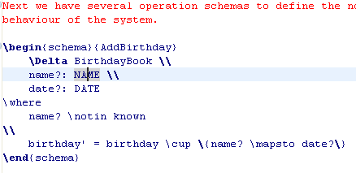

To quickly navigate to the declaration part of a Z name, you can follow the follow two steps:
Position the cursor within the name. For example, the below figure shows that the cursor is positioned within the name "NAME".

Select the menu entry Edit > Go To Declaration.
Then the name in its declaration part will be selected and visible in the editor as show below.